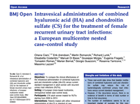

Cystistat instillation for patients
1039 views
Nézetek
- 1039 Total Views
- 765 Website Views
- 274 Embedded Views
Műveletek
- Social Shares
- 0 Likes
- 0 Nemkedvelések
- 0 Comments
Share count
- 0 Facebook
- 0 Twitter
- 0 LinkedIn
- 0 Google+
Embeds 3
- 25 hbs.hu
- 1 www.hbs.hu
- 2 odoo.hbs.hu
-

cuaj-5-6-e136
1558 Views . -

-

Cikk a Neurourology and Urodynamics-ban 2018.
1473 Views . -

IC-BPS Treatment Checklist
1498 Views . -

IC-BPS diagnostic algorhytm.
1488 Views . -

Glycosaminoglycan Therapy for Bladder Diseases
1385 Views . -

ESSIC 2017 Budapest abstracts
1464 Views . -

Prevalence of Symptoms of Bladder Pain Syndrome 2011
1304 Views . -

-

-

-

-

- 
-

-

-

-

-

-

-

Sugárvédő ruházat ismertető
3284 Views . -

OP Set System
3044 Views . -

Kompressziós pólya felhelyezése
2846 Views . -

Kötszer Pólya L&R
2643 Views . -

Nedves sebkezelés flyer L&R
2438 Views . -

PDB_Actico UlcerSys Liner
2324 Views . -

SciCan STATIM G4
2321 Views . -

PDB_Actico UlcerSys
2209 Views . -

UroStill_hasznalati_utmutato_v1.1
2038 Views . -

KORONAVIRUS JARVANY
1774 Views . -

SciCan Statim G4
1709 Views . -

New_aiding_device_for_self-instillation_v2
1690 Views . -

Kitpack
1684 Views . -

ICBPS_SZÓSZEDET
1620 Views . -

IC - FAQ-s and appropriate answers Mumbai 2019
1612 Views . -

UroStill_Users_Manual_v1.1
1605 Views . -

L&R Corporate Film
1601 Views . -
cuaj-5-6-e136
1558 Views . -
-
IC-BPS Treatment Checklist
1498 Views .